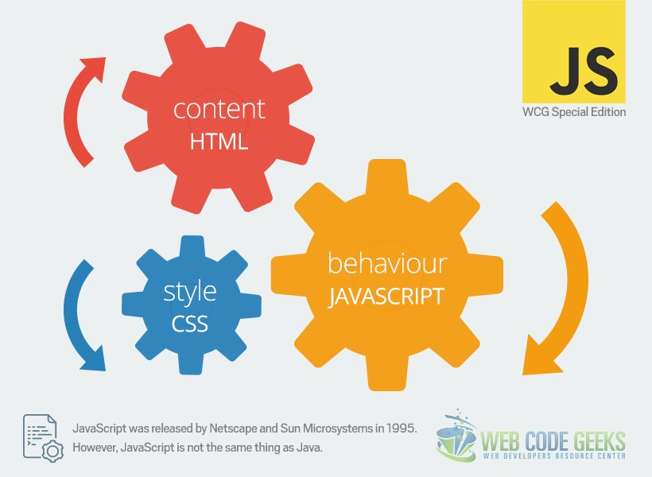
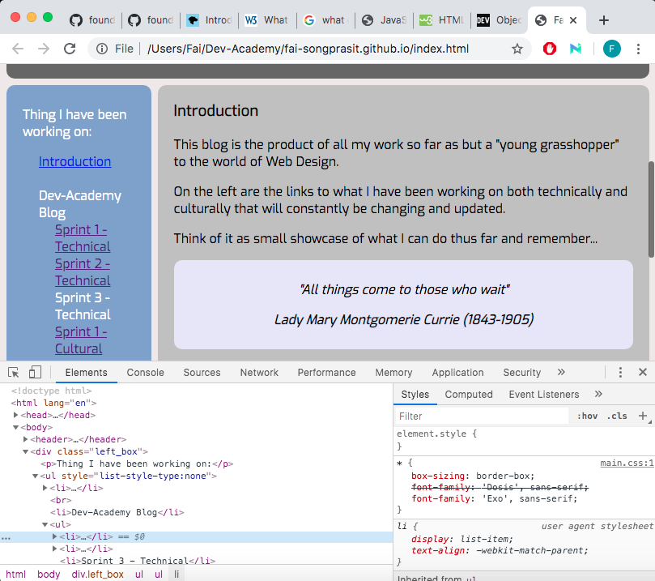

The inner workings of Web Pages
Web pages 101
Imagine a web page as a movie set. The screenplay and scripts are written as the skeleton of how the film should progress. Then you have to decide on how many people you need for the camera crew, which actors to cast and what special effects you think might make this movie a new Blockbuster smasher. Then you have the director, he helps make the decisions if and where needed but his time to shine is when the stage is set, the actors are casted and filming commences. He interprets the script (assuming that he didn't write it this time) and directs the actors through the motions needed in any given scene. he then decides on what special effects to use where and how often (if at all) certain scenes should show up in the film for it all to come together as the final product. Thinking about it though, the film would have worked out just fine with just the crew (cast included), but having a director there in charge of how they all interact and how the film is put together could be the difference between making Blockbuster smasher or just your average movie.
A web page is kind of like that, there are different styles of code that is needed to put it together. The HTML being the skeleton structure, CSS being the cast, crew and special effects, and JavaScript as the director. Like the example above, a web page could just be completely made up of HTML and CSS files and it would still be a fully functioning page. But if you want the it to do more than just be pretty, like have some kind of interactive feature to increase the level of engagement or have a pop up message whenever someone subscribes to your blog, then you want JavaScrpit. To put it more simply, HTML provides a website with its structure, CSS concerns itself with how the page is presented and JavaScrpit deals with how the page behaves when someone interacts with it.
Getting right into it!
What is loop?
There is a little bit more going on with loop than just a few lines of code on a page. Loops require a set of rules that dictate what a specified type of interaction with the page must go through before it produces a result that we see on the web page. Loops are used to repeatedly run a block of code - until a certain condition is met.

Example: Say you were to write a cookbook recipe for
how to prepare a roasted vegetables dish. There are a lot of ingredients that
need to be chopped before it goes into a roasting pan. Instead of writing
instructions like:
You could just write "dice vegetables into small 2cm cubes" without the
redundancy. This is effectively what looping does for us in code!
The results that we get from lopping depends on which set of rules it has followed to produce the answer that we get. These rules can be as simple as counting up/ down or it can pass through a set of other rules which must follow a procedure called "control flow". The interactions go through each set until an answer is found or it has come to the end of its preset looping point (e.g. stop counting at 50), then and only then does the function stop looping. The control flow basically gives us a guideline of what order we should set the rules in. Ultimately we want the web page to go through and gather as much information as possible before it produces an answer.
You are a typical 9am to 5pm worker who only works Monday to Friday. You have two ways of getting to work, cylcing and busing, depending on what the weather is doing that day. Your thought process would first start with what day of the week it is. If it is between Monday and Friday then you would need to go to work. You then look outside to see if the weather is nice, if it is, you'll cycle, if not, you'll take the bus. Now if you change the order of that same train of thought to first check the weather before checking what day of the week it is, you may find yourslef half way to work on a Saturday or Sunday regardless of which method you decided to take to get there.
What is DOM and why is it relevant to all of this?
What is DOM?

Document Object Model or DOM is what translates your HTML and CSS document onto a web page! It represents the page so that programs can change the document structure, style, and content. The DOM represents the document as nodes and objects. That way, programming languages can connect to the page.
As seen in the diagram, DOM is often referred to as a tree, working its way from the root to the branches connecting all the nodes and objects that the HTML file contains. Its is a bird's eye view of what the code looks like with the option of inspecting and interacting with each of the branches/elements in the code.
Every web browser has a DOM function embedded into it to varying degrees of power. This means that every web page can be interacted with/manipulated on site. You can do this by right clicking your mouse or trackpad and navigating down to "inspect".
NOTE: If you are feeling mischievous, YES! You can change whatever you see on a web page but keep in mind that these changes are not permanent. They will revert back to what they were when the page is refreshed!
Example of what inspecting a page looks like:
Accessing data in JavaScript from arrays and objects
What are arrays and objects? How are they different?
In JavaScript pretty much everything is an object. It can be an array or a function, or it can be numbers, names and booleans (true/false) as long as it is attached to a "key". In the latter cases, a "key" is basically an identifier that you attach them to.
Before we move on to talk about objects and arrays, we need to first understand what "variables" are. Variable or var represents an element or key in a mathematical context. Why is this important!? We have to remember that all coding languages are mathematical, therefore we have to speak its language inorder for it to understand our intentions.
Example of key as object:
var x = {
name: "John", // anything inside "" is a string
age: 25, // number
isStrange: true // boolean (true/false)
}
In the example given, in case you haven't worked it out already, the key is "x". The reason why the properties in these keys cannot ever be an object is becasue objects can be manipulated/changed (e.g. age can later be changed to age = 20 and the computer will take the last definied number as it's value, remember control flow), while the numbers, strings and booleans are absolute (15 will always be 15 and true is always true etc.).
For future references! We talked about DOM just before where I gave an example of what the web page would look like in "inspect". If you look at the above picture you can see a tab called "Console" next to "Elements" which is hightlighted. We use this console to see if we will get the results we need from both objects and arrays.
Lets talk about arrays, arrays are special variables that can contain more than one value at a time. We can look at it like a shopping list, the list itself is an array and all the things in the list are the variables that it contains.
Example of an array:
var shopping_list = ["leek", "celery", "carrot"]
In this case the array has been given a name "shopping_list" and given leek, celery and carrot as its three values. Now that we have defined the variable shopping_list, we can retrieve the items in the list at a later stage.
So how do you access the information in objects and arrays? As we have given them all names and/or keys as variables, we can call on the values at any time, like calling your friend by name. By taking into account the above examples of objects and arrays, we can call them like this:
Objects
console.log(x.name) // retruns John
Array
console.log (shopping_list[1]) // returns celery
In order to call objects, first you have to reference its key (x), then the name that that you have given to that specific object (name) with a "." between them. This means that if we were to write x.age it would then return 25.
For Arrays, first we have to remember that you have to call them by their index numbers, which actually starts from 0 to 1 to 2 and so on. What we see as second in the list is actually 1 in index numbers. To access that value, we must first declare its variable name (shopping_list) followed by its index number [1].
What are functions and why are they useful?
We can control many aspects of the website when it comes to the interactive side of things using functions. A function is like a math equation but with code, it is a block of code that is designed to perform a specific task or calculate a value when executed(or "invoked"). A good example is at the bottom of a Trademe listing, you will find something like this:
This count is updated everytime someone clicks on the listing. This count uses a "function", where by the click action passes through the defined parameters and arguement set inside the function and produces the increased page count in realtime.
Once named, A function can be used over and over again without us needed to rewrite a completely new block of code everytime we want to to pass through a different set of values while using the same set of rules/argument. Like loop, it is there to make our code a lot less redundent.
Example:
function ShowMessage(firstName, lastName) {
- alert("Hello " + firstName + " " + lastName);
}
ShowMessage("Steve", "Jobs");
ShowMessage("Bill", "Gates");
As you would have guessed the new ShowMessage results that we would get from the names that I put in after } would be "Hello Steve Jobs" and "hello Bill Gates" respectively. This example has shown us that instead of having to write
comsole.log("Hello newFirstName newLastName")
everytime we get more names, we can just use the function name ShowMessage(__,__) for every new name that we come across after the function declaration.
Note: Functions do not automatically create spaces so you will have to add them manually INSIDE the function.